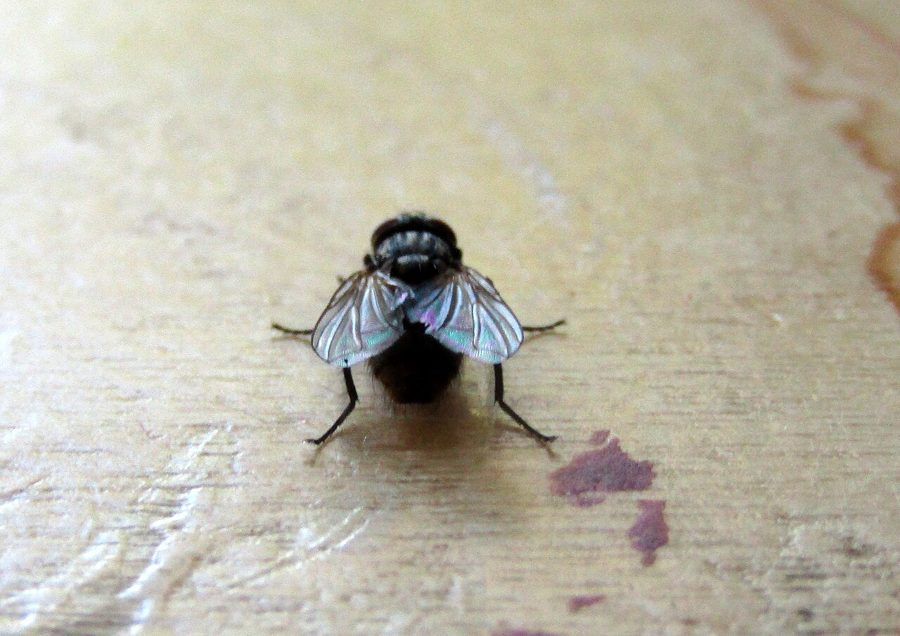

घरेलू मक्खीHouse Fly
Musca domestica · Muscidae · INS-0092

- Scientific name वैज्ञानिक नाम
- Musca domestica Linnaeus, 1758
- Family कुल
- Muscidae
- Hindi हिंदी
- घरेलू मक्खी
- Local names स्थानीय नाम
- gharelu makhi, ghar ki makhi, makhi
- Status here यहाँ की स्थिति
- native
- Movement आवागमन
- Resident, here all year
- IUCN IUCN
- not evaluated
- Review समीक्षा
- audited and independently read
When to look कब देखें
Present all year. साल भर मौजूद।
Tell it apart from इनसे अलग पहचानें
घरेलू मक्खी / House Fly
Musca domestica Linnaeus, 1758 — Muscidae
घरेलू मक्खी — हर घर में दिखने वाली एक सामान्य, छोटी भूरे-काले रंग की मक्खी है। यह बिना डंक के होती है और सिर्फ तरल खाना चूसती है, इसलिए खुले मुँह से काटती नहीं, पर अपनी खुरदरी जीभ से खाना को गीला करती है। यह गौमांस के पास, कूड़े के ढेर पर, और पशु के गोबर पर बैठती है, और फिर वही पैर सीधे हमारे खाने पर रख देती है। यही इसे भारत और दुनिया में सबसे खतरनाक कीट बनाता है — यह पेचिश, दस्त, और अन्य बीमारियाँ फैलाती है।
Quick Identification त्वरित पहचान
| Feature | Description |
|---|---|
| Size | Small fly; body length 6–7 mm |
| Colour | Uniform grey or greyish-brown |
| Head | Grey-brown; single pair of large compound eyes occupying much of the head |
| Thorax | Four dark longitudinal stripes on the dorsal surface |
| Wings | Hyaline, held tent-like over the body at rest |
| Legs | Dark; moderately long and hairy |
| Mouthparts | Sponging type (siphon-like); used to dissolve solids and drink liquids |
Field tip: A uniformly grey or grey-brown fly that is extremely common indoors, especially around food, kitchens, and animal waste areas. It walks on surfaces using sticky feet and immediately contaminates anything it touches. The most abundant fly in every house and shed in the region.
हिंदी — कैसे पहचानें: छोटी, भूरी मक्खी, घर में हर जगह। खाने पर बैठती है, उठती है, फिर दूसरे खाने पर बैठती है।
Morphology आकारिकी
Biometrics:
| Measurement | Range |
|---|---|
| Body length | 5.5–8.0 mm |
| Wingspan | 12–15 mm |
Structure: Compact body, uniform grey-brown. The head is dominated by large black compound eyes separated by a narrow frons. The antennae are short and inconspicuous. The thorax is robust with four characteristic black longitudinal stripes running the length of the notum. The wings are clear, with veins clearly visible. The legs are relatively long, with claws and adhesive pads (pulvilli) that allow the fly to walk upside down on ceilings. The proboscis is a siphon-like structure used to dissolve solids and feed on liquids.
Life stages: Eggs are 0.5 mm; larvae (maggots) are cylindrical, whitish, and up to 8 mm; pupae are dark brown, barrel-shaped, and 4–6 mm.
Behaviour & Ecology व्यवहार और पारिस्थितिकी
The most cosmopolitan and synanthropic (human-loving) insect species. House flies have evolved to live exclusively in proximity to humans and domesticated animals. Females lay eggs in decaying organic matter — dung, garbage, food waste, and sewage — where larvae develop rapidly. A single female can produce 1000–2000 offspring in a lifetime. Flies rest on walls and ceilings indoors, especially in dark corners, and venture to food sources dozens of times per day. They vomit onto solid food to predigest it with enzymes, then suck up the liquid, thus contaminating surfaces with faecal matter from their previous meals.
हिंदी: घर में ही रहती है, बाहर नहीं। गोबर, कूड़े में अंडे देती है, 8–10 दिन में मक्खी बन जाती है।
Life Cycle / Phenology जीवन चक्र
| Stage | Duration |
|---|---|
| Egg | 24 hours |
| Larva (3 instars) | 3–7 days |
| Pupa | 3–7 days |
| Adult lifespan | 15–30 days (females); 10–17 days (males) |
| Egg-to-adult | 7–14 days in summer conditions |
Generations: Multiple overlapping generations per season. In warm months, a new generation emerges every 10–12 days.
हिंदी: गर्मी में हर 10 दिन में नई पीढ़ी निकलती है। सर्दी में धीमी होती है।
Host Plants or Prey आहार
Feeding substrates (larvae):
- Animal faeces (cattle, buffalo, pig, poultry)
- Food waste and kitchen scraps
- Compost and decaying plant matter
- Sewage and polluted water
Adult diet:
- Dissolved sugars: fruit juices, honey, nectar
- Liquefied proteins: blood serum, wound secretions, decomposing meat
- Anything that can be dissolved and siphoned
Predators / Natural Enemies शत्रु
- Flies: Parasitoid flies (Tachinidae) lay eggs on larvae.
- Spiders: All web-spinning spiders catch adult flies; hunting spiders actively hunt them.
- Wasps: Parasitoid wasps parasitize larvae and pupae.
- Birds: Swallows, swifts, and other insectivorous birds catch flying adults.
- Vertebrates: House geckos and house lizard eat resting flies indoors.
Agricultural / Human Relevance कृषि प्रासंगिकता
Disease transmission. The House Fly is documented as a mechanical vector of numerous enteric pathogens. Pathogenic bacteria including Salmonella, Shigella, E. coli, Staphylococcus, and Vibrio cholerae are picked up from contaminated faeces and sewage and transferred directly to food. Viruses including enteroviruses and rotavirus are similarly transmitted. In areas with poor sanitation, house flies are implicated as major vectors of bacterial diarrhoea, dysentery, and typhoid. Approximately 2 million diarrhoeal deaths globally involve house fly transmission as a cofactor.
Prevention. The standard prevention measures are: (1) cover latrines and sewage; (2) construct and maintain hygienic latrines with lids; (3) cover food and water; (4) wash hands after toilet use and before eating; (5) screened windows and doors; (6) maintain clean, dry surroundings with no exposed garbage or animal waste; (7) proper sewage disposal and wastewater treatment.
Insecticide sensitivity: Populations worldwide have developed resistance to many organophosphate and synthetic pyrethroid insecticides, making chemical control unpredictable.
हिंदी: पेचिश, दस्त, और अन्य बीमारियाँ फैलाती है। रोकथाम: शौचालय को ढक्कन लगा दीजिए, खाना ढक दीजिए, हाथ धोइए, कूड़ा-कचरा दूर रखिए।
Expected Locally स्थानीय रूप से अपेक्षित
Not a field record. Written from published accounts for eastern Uttar Pradesh. No confirmed local sighting yet — if you have seen it, that is what the atlas needs.
अभी तक स्थानीय पुष्टि नहीं। यह विवरण प्रकाशित स्रोतों से है, किसी अवलोकन से नहीं।
Ubiquitous indoors and around houses, animal shelters, and food-preparation areas throughout the region. Every house in Basti district is expected to harbour hundreds to thousands of house flies. Abundance peaks in warm, wet months when sanitation lapses. A record would be unnecessary — the species is already presumed present everywhere.
Distribution वितरण
Global range: Cosmopolitan, found on every continent and in virtually every human settlement worldwide.
In India: Ubiquitous in all villages and towns; exceptionally abundant in areas with poor sanitation.
In Uttar Pradesh: Present in every populated area; abundance correlates with sanitation conditions.
In Basti district / eastern UP: Ubiquitous resident in all inhabited areas.
Research Questions शोध प्रश्न
- Does screening the latrine and covering water storage reduce house fly numbers in a household? / शौचालय को जाली लगाने और पानी को ढकने से घर की मक्खियाँ कम होती हैं? — Count flies daily in treated and untreated households.
- What is the bacterial load on a house fly's feet compared to its gut? — Swab and culture different body parts.
- How many bacteria and viruses can a single house fly carry from sewage to food? — Molecular analysis of fly-contaminated food.
- Do house flies prefer certain food types or waste materials for laying eggs? — Offer different substrates and observe oviposition.
- What predators visit a house most frequently and how many flies do they consume per day? — Observe geckos and spiders indoors and document prey.
Similar Species मिलती-जुलती प्रजातियाँ
| Species | How to tell apart | हिंदी |
|---|---|---|
| Musca sorbens (Face fly) | Slightly smaller; males have a tuft of black hairs around the mouth; more attracted to eyes, nose, and open sores | आँख की मक्खी — मुँह पर काली दाढ़ी |
| Stable fly (Stomoxys calcitrans) | Slightly larger (7–8 mm); has a dark, pointed proboscis that protrudes forward; painful bite | काटने वाली मक्खी — लम्बी सूई जैसी सूंड़, काटती है |
| Blow flies (Calliphora, Chrysomya) | Larger (7–10 mm); metallic blue, green, or bronze sheen; attracted to meat and corpses | चमकदार, बड़ी मक्खी — गोश्त पर बैठती है |
Field rule: Uniform grey-brown, small (6–7 mm), four dark thoracic stripes, found indoors and around food: House Fly.
Taxonomy & Classification वर्गीकरण
Original description. Linnaeus described the House Fly as Musca domestica in 1758 in Systema Naturae (10th edition, p. 596). The type locality is Linnaeus's type designation and refers to the domesticated form around humans. The genus Musca is from Latin meaning "fly," and domestica clearly refers to its domestic habit.
Subspecies. Monotypic. However, populations differ genetically across continents, and several putative subspecies have been proposed but are not formally recognized.
Family and order placement. Order Diptera, family Muscidae (true flies), subfamily Muscinae.
Phylogenetic notes. Musca domestica is the most derived muscid, representing an extreme specialization for synanthropy. Molecular evidence suggests domestication occurred within the last 10,000 years.
IUCN status rationale. Not evaluated. Abundant and thriving globally; conservation status is not applicable.
Photo Gallery फोटो गैलरी
Photos needed आवश्यक फोटो
- [ ] Fly on food or a wall, showing grey-brown color (मक्खी)
- [ ] Maggots in compost or waste (लार्वा)
- [ ] Multiple flies gathered on food or waste (कई मक्खियाँ)
No photos yet — add field photos to media/species/house_fly/ and run node scripts/sync_photos.js.
References संदर्भ
- Linnaeus, C. (1758). Systema Naturae. 10th edition, p. 596. Salvius, Stockholm. [original description]
- Barraud, P.J. (1934). The Fauna of British India, including Ceylon and Burma. Diptera, vol. 5: Family Culicidae. Taylor and Francis, London.
- Hall, R.D. (Ed.). (2001). Flies as Factors in Public Health. CRC Press, Boca Raton, Florida.
- Kogel, M., Kaufmann, C., Schaffner, F., & Mathis, A. (2013). Molecular monitoring of anthropogenic pest flies in Switzerland. Parasites & Vectors 6: 320.
- Oliva, A., Sassi, D., & Morales, M.R. (2007). Pathogenic agents isolated from Musca domestica L. and Stomoxys calcitrans L. larvae (Insecta: Diptera) involved in the transmittance of animal diseases. Revista Latinoamericana de Microbiologia 49: 14–19.
- GBIF Occurrence Data — Musca domestica, India (2026).
Source file: species/fauna/insects/house_fly.md